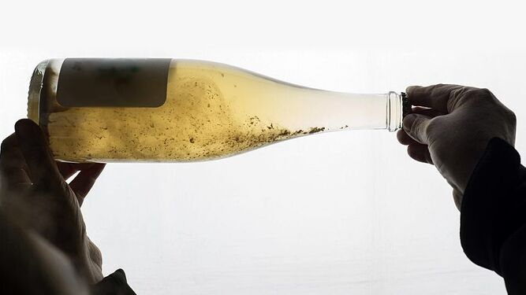
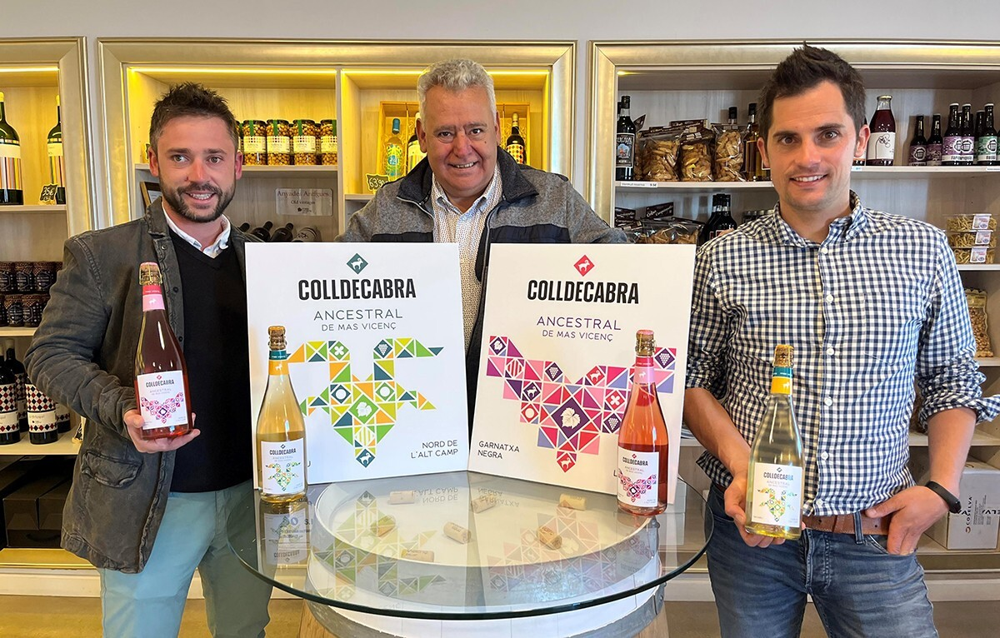
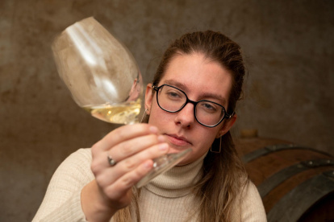
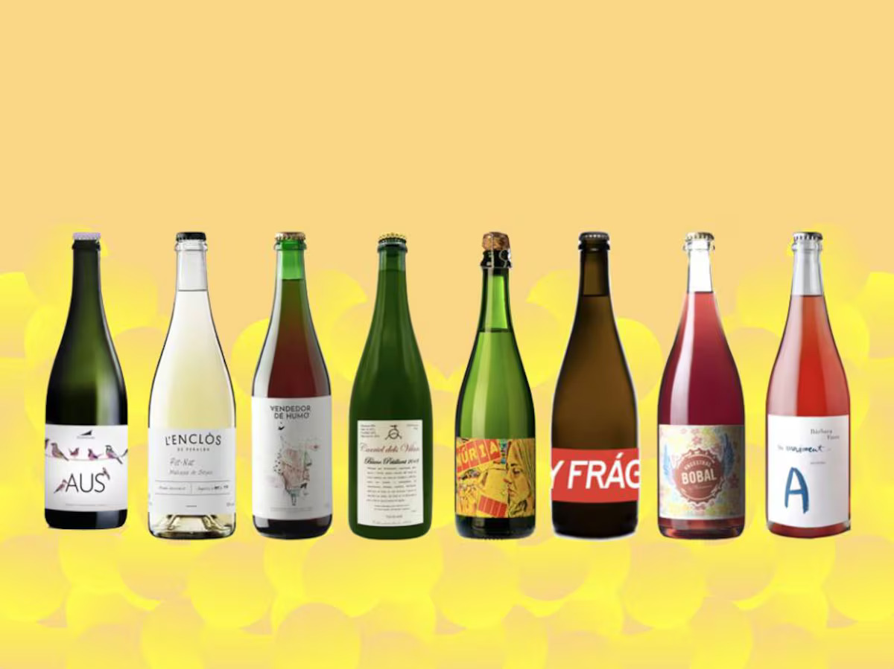

Una burbuja diferente
Estás en la mesa. Delante tuyo, una botella con tapón de corona, el vino ligeramente turbio, servido en copa amplia. Te llevas el vaso a los labios y lo que encuentras no es el gas agresivo de un cava industrial ni la aristocracia del champagne. Es otra cosa. Una burbuja que habla, que tiene textura, que sabe a uva y a tierra y a memoria.
Esto es un vino de método ancestral. Un pét-nat —petillant naturel. Y si os parece una moda nueva, hay que explicaros algo: este vino es, probablemente, el vino espumoso más antiguo que existe. La demarcación de Tarragona —con el Priorat, el Montsant, la Conca de Barberà, la Terra Alta, el Baix Gaià— es uno de los territorios mejor dotados de Cataluña para producirlo. Lo tenemos en casa. Y a menudo no lo sabemos.

El sedimento no es un defecto: es la firma del método ancestral.Cómo funciona, en treinta segundos
El método es sencillo hasta la brutalidad: se vendimia, se inicia la fermentación con las levaduras naturales de la propia uva, y cuando esa fermentación todavía no ha acabado, se embotella. El tapón se pone. El vino continúa fermentando dentro. El gas no puede escapar. Nace la burbuja. Una sola fermentación, de principio a fin. Sin azúcar añadido. Sin levaduras industriales. Sin dosage. Lo que hay en la copa es exactamente lo que había en la viña.
La diferencia fundamental con el cava o el champagne: en esos casos la fermentación acaba en depósito y después se induce una segunda fermentación controlada en botella. En el pét-nat hay una sola fermentación, que empieza en el depósito y acaba en el vidrio. El resultado: burbuja más fina, sensación cremosa en boca, graduación baja —entre 9 y 11 grados— y una frescura que no se puede fingir.
¿Por qué vuelven ahora?
No es casualidad. Tres fuerzas confluyen al mismo tiempo: el cansancio de una generación que prefiere la verdad a la perfección; el precio y la escala —el método ancestral se puede hacer en cellers pequeños sin vender cien mil botellas—; y la identidad, porque el pét-nat es el espumoso del lugar. Cada uva, cada suelo, cada microclima se expresan sin filtro.
¿Pasará de moda? El ruido que lo rodea, probablemente sí. Pero el vino en sí —ligero, fresco, honesto, accesible— responde a una tendencia de fondo: el deseo de beber menos pero mejor, de saber qué hay en la copa. Eso no pasa de moda. Evoluciona.
 Limoux, Occitania — donde en 1531 los monjes embotellaron la primera burbuja ancestral de la historia.
Limoux, Occitania — donde en 1531 los monjes embotellaron la primera burbuja ancestral de la historia.
En casa nuestra, desde siempre
La demarcación de Tarragona tiene dos mil años de viticultura documentada. En la Cartuja de Scala Dei, en el Priorat, los monjes cartujos elaboraban vino desde 1194 con fermentaciones naturales y mínima intervención. No lo hacían por ideología. Lo hacían porque era la única manera que sabían. Y funcionaba. La filoxera del siglo XIX rompió aquella continuidad, pero las variedades quedaron: la garnatxa blanca de la Terra Alta, el trepat de la Conca, el cartoixà del Baix Gaià, el morenillo casi extinguido, el sumoll resucitado, el cartoixà vermell del Alt Camp. Tenemos la uva ideal. Tenemos el territorio. Y tenemos los elaboradores.
Algunos de los que lo hacen aquí
Una selección —no exhaustiva— de cellers de la demarcación que trabajan el método ancestral con proceso documentado y vino en el mercado.
DO Montsant
Celler Gritelles
Cornudella de Montsant
🍾 Brisat Ancestral · MacabeuMacabeu blanco autóctono: 24 días de fermentación, embotellado a densidad 997, tres meses adicionales en botella, degüelle manual. Zero sulfitos, zero azúcares. Nota: «brisat» combina el método ancestral con maceración en pieles — dos técnicas en una botella, de las que hablaremos en próximo artículo.
DO Montsant
Bell Cros
Marçà · Ecológico certificado UE
🍾 Petillant Natural · Garnatxa Blanca100% garnatxa blanca del Montsant, ceps de 40–70 años, embotellada antes de acabar la fermentación. Aromática, acidez viva, graduación moderada — la variedad perfecta de la demarcación para este método.
DO Conca de Barberà
Coop. Agrícola de Barberà
Barberà de la Conca · Celler Martinell 1919
🍾 Cabanal Brut Natural · TrepatEl primer celler de Cataluña en elaborar un ancestral con trepat. Una cooperativa centenaria pionera con una variedad autóctona casi exclusiva de la Conca. El trepat es ideal: piel fina, fruta roja intensa, acidez alta, graduación naturalmente baja.
Alt Camp · Sin DO
Celler Sanromà
Vila-rodona · "Tarragonac"
🍾 Ancestral Rosat · Trepat ecològicEduard Sanromà elabora su Ancestral Rosat con 100% trepat ecológico. 10,5 grados, cinco meses de crianza en botella. Sin DO por las limitaciones regulatorias del método ancestral en España.

Una noche en Llepol
Los Gourmets de Tarragona tuvimos la suerte de conocer a Eduard Sanromà de primera mano cuando presentó algunos de sus maridajes en una cena en Llepol: vino en mano, producto sobre la mesa, ninguna distancia entre quien hace y quien bebe.
DO Tarragona
Mas Vicenç
Cabra del Camp · 5ª generación
🍾 Ancestral Colldecabra Rosat100% garnatxa negra de finca propia, vendimiada en punto de madurez precoz para preservar la frescura por encima de la concentración. Aromas de cereza y frambuesa, burbuja fina, versatilidad total en mesa.

Cena de verano
Los Gourmets probamos una primera versión de este vino en una cena de verano, cuando el proyecto apenas iniciaba este camino. El mejor vino no siempre es el que acumula años de bodega, sino el que sabes exactamente de dónde viene y quién lo ha hecho.
Terra Alta
Celler Jordi Miró
Terra Alta
🍾 Textura 3 Naturalment AncestralTextura 3 «Naturalment Ancestral»: garnatxa blanca de la Terra Alta, amarillo paja, burbuja cremosa, notas de fruta del bosque y flores. Lo descubrimos en la visita al Buidasacs con motivo del Gastronia 2025.
Terra Alta
Bàrbara Forés · En Moviment
Gandesa · 1.494 botellas
🍾 Moviment Ancestral · MorenilloPili Sanmartín Ferrer, sexta generación. Elaborado con morenillo, variedad autóctona casi extinguida recuperada por la familia en los años noventa. Una fermentación, seis meses en botella, degüelle manual. Notas de grosella, naranja y hierbas secas. Un ancestral de variedad recuperada de casi la extinción.

Vinyes del Tiet Pere
Oriol Pérez de Tudela y Mercè Salvat, con Sara Pérez y René Barbier Jr. (Venus la Universal / Mas Martinet) como socios. Ancestral de cartoixà vermell, viñas de 35 años en arcilla blanca de Vilabella. 350 botellas, 11,5 grados. Cuando gente de este nivel apuesta por 350 botellas de una variedad casi desconocida, vale la pena buscarla.

Celler 9+
Moisès Virgili, Nou de Gaià, a cuatro kilómetros del mar. Elabora una línea numerada de espumosos ancestrales: el 5è, 100% sumoll ecológico —blanco de negro, ancestral puro—; el 7è, cartoixà ancestral. El cartoixà es la denominación local del xarel·lo en el Baix Gaià. El tesoro está, literalmente, al lado de casa.
 Andrea Miró, del equipo de Celler Jordi Miró, con el Textura 3 «Naturalment Ancestral» — garnatxa blanca de la Terra Alta.
Andrea Miró, del equipo de Celler Jordi Miró, con el Textura 3 «Naturalment Ancestral» — garnatxa blanca de la Terra Alta.
Cómo disfrutarlos
Temperatura entre 6 y 9 grados. Copa amplia, no flauta — en un pét-nat los aromas lo son todo. Si la botella tiene sedimento, servidla con suavidad. Marida a la perfección con pescado a la plancha, almejas, anchoas, mejillones o arroz de marisco. Para iniciarse: un pét-nat de garnatxa blanca o trepat, a 7 grados, con unas anchoas de l'Escala o unos mejillones a la vinagreta.
La mirada gourmet
Desde los Gourmets de Tarragona entendemos que el vino y la cocina son los dos idiomas de un mismo diálogo sobre el territorio. Beber un pét-nat de morenillo de la Terra Alta es beber la Serra de Pàndols y la historia de una familia que salvó una variedad de la extinción. Beber un ancestral de trepat de la Conca es beber Barberà, la cooperativa de Martinell, la memoria de una variedad que casi no sobrevivió. Beber un cartoixà vermell de Vilabella es beber el Alt Camp, las arcillas blancas, las viñas de 35 años que nadie miraba.
El vino ancestral no es el pasado que vuelve. Es el futuro que siempre había estado aquí.